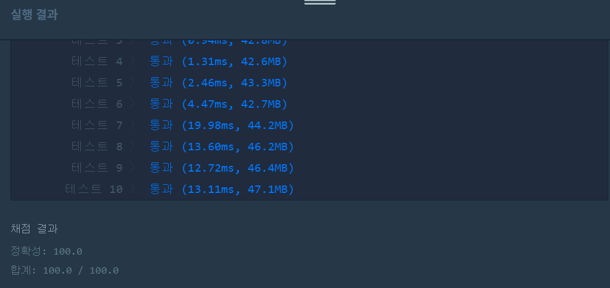
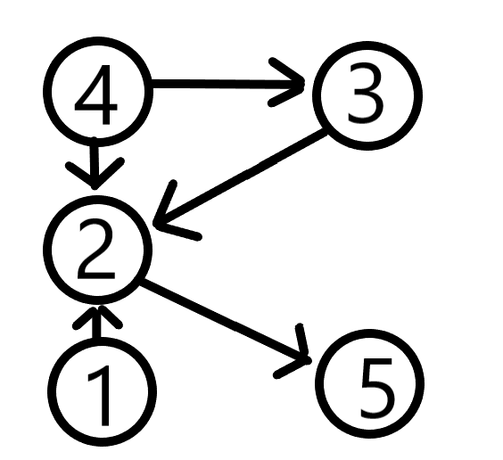
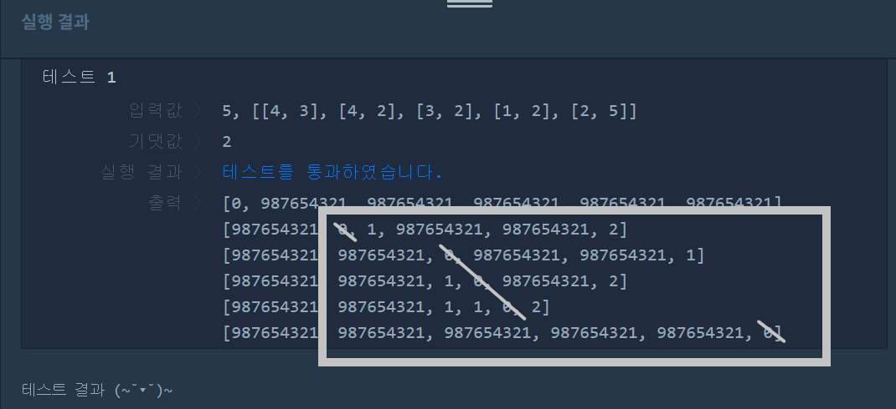

👀 문제
https://programmers.co.kr/learn/courses/30/lessons/49191
👊 도전
1. 설계
- 플로이드 와샬 알고리즘을 사용한다.
- 알고리즘으로 계산한 최단 경로가 있는 갯수를 리턴한다.
2. 구현 (성공 코드)
1
2
3
4
5
6
7
8
9
10
11
12
13
14
15
16
17
18
19
20
21
22
23
24
25
26
27
28
29
30
31
32
33
34
35
36
37
38
39
40
41
42
43
44
45
46
47
48
49
50
51
52
53
54
55
56
57
58
59
60
61
import java.util.*;
/**
*
* @author HEESOO
*
*/
class Solution {
int INF=987654321;//방문불가를 뜻함
public int solution(int n, int[][] results) {
int answer = 0;
int[][] scores=new int[n+1][n+1];
int win, lose;
//배열 초기화
for(int[] score:scores){
Arrays.fill(score, INF);
}
//대각선을 0
for(int i=0;i<scores.length;i++){
for(int j=0;j<scores.length;j++){
if(i==j) scores[i][j]=0;
}
}
//한방향 그래프 win->lose
for(int[] result:results){
win=result[0];
lose=result[1];
scores[win][lose]=1;
}
//scores[i][j]로 가는 최단경로 저장
for(int k=1;k<=n;k++){
for(int i=1;i<=n;i++){
for(int j=1;j<=n;j++){
if(scores[i][j]>scores[i][k]+scores[k][j]){
scores[i][j]=scores[i][k]+scores[k][j];
}
}
}
}
// for(int[] score:scores){
// System.out.println(Arrays.toString(score));
// }
//선수들이 게임을 한 적이 있는지 확인
boolean[] flag=new boolean[n+1];
Arrays.fill(flag, true);
for(int i=1;i<=n;i++){//사람 i 기준
for(int j=1;j<=n;j++){//나머지 j선수들과 게임한적 있는지 체크
if(i==j) continue;//나자신과 게임을 뜻하므로 패스
if(scores[i][j]==INF&&scores[j][i]==INF){//경로가 존재하지 않으면(i와 j가 게임하지 않았다면)
flag[i]=false;
break;//모두와 게임을 해야하므로
}
}
}
// System.out.println(Arrays.toString(flag));
for(int i=1;i<flag.length;i++){
if(flag[i]) answer++;
}
return answer;
}
}
3. 결과
 🤟 성공 🤟
4. 설명
- 플로이드 와샬 알고리즘을 적용한다.

- 그래프에서 모든 꼭짓점 사이의 최단 경로의 거리를 구하는 알고리즘이다.
- 이 알고리즘을 이용하면 최단 경로를 알 수 있을 뿐만 아니라 연결되지 않은 경로(갈 수 없는 경로)도 알 수 있다.
- 연결되지 않았다는 뜻은 선수 i, j의 승패를 알 수 없다는 뜻이다.
- 직접 연결되지 않았지만 선수 k로 거쳐서 i, j가 연결된다면 선수의 승패를 알 수 있다(i, j가 게임하진 않았지만, i가 k한테 이겼고, k가 j한테 이겼다면 i는 j한테 이김을 알 수 있다).
- 따라서 i, j 사이에 k를 거쳐가는 방법을 모두 찾아 최단경로를 결정하는 플로이드 와샬 알고리즘을 이용하면 선수들의 승패를 확인할 수 있다.
- 2차원 배열에 플로이드 와샬 알고리즘을 결과값을 저장한다.
- int[][] scores로 n+1길이만큼 선언한다.
- 선수는 1부터 시작하므로 배열을 n+1만큼 생성하여 0은 사용하지 않겠다.
- 내가 나와 게임하는 경우는 없으므로 대각선은 0으로 초기화한다.
- 나머지 값들은 INF에 적당히 큰 수를 넣어 이 값으로 저장한다.
- 이때 큰 수를 넣는다고 Integer.MAX_VALUE를 넣으면 안된다.
 최단경로를 계산하기 위해 값을 서로 더하는데, int의 최댓값을 둘 다 더할 경우 오버플로우로 음수가 발생한다.
최단경로를 계산하기 위해 값을 서로 더하는데, int의 최댓값을 둘 다 더할 경우 오버플로우로 음수가 발생한다. - win->lose 방향으로 한 방향 그래프를 만든다.
- 3개 for문을 이용해 최단 경로를 찾는다. 이때 k는 거쳐가는 꼭짓점, i는 출발하는 꼭짓점, j는 도착하는 꼭짓점이다.
- 즉, 선수 i, j의 승패를 알고자 할 때, i, j가 선수 k와 게임한 적이 있다면 해당 거리를 저장한다(INF에서 최단경로 거리값으로 저장되었으므로 선수 i, j간의 승패여부를 알 수 있다는 뜻).
- 승패를 알 수 없는 선수들을 찾는다.
- boolean[] flag로 선수의 순위를 알 수 있는지에 대한 여부를 저장한다.
- 일단 모두가 알 수 있다고 가정한 후, scores를 확인하면서 알 수 없는 선수에게 false를 준다.  (0은 사용하지 않고, 대각선은 나자신이므로 빗금처리 했다.)
- 선수 i를 기준으로, 선수 j와 승패를 알 수 있는지 확인한다. scores[i][j]와 scores[j][i]가 모두 INF면 선수 i, j간에 경로가 없다는 뜻이다. 즉, 게임을 한 적이 없고, 다른 선수를 통해서도 승패를 알 수 없으므로 flag[i]를 false로 바꾼다.
- 선수 i는 나를 제외한 n-1명과 방문할 수 있어야 승패를 알 수 있다. 따라서 하나라도 경로가 존재하지 않는다면 i의 선수 승패는 알 수 없으므로 break로 i에 대한 탐색을 종료한다.
- 마지막으로 flage의 true 갯수를 리턴하면 그것이 정답이다.
👏 해결 완료!
선수의 승패를 알기 위해 플로이드 와샬 알고리즘을 적용하겠다는 생각을 하는 사람들이 대단하다. 알고리즘을 이해하는 것은 어렵지 않았지만, 왜 이 문제를 플로이드 와샬 알고리즘으로 푸는지 이해하는 시간이 오래 걸렸다.